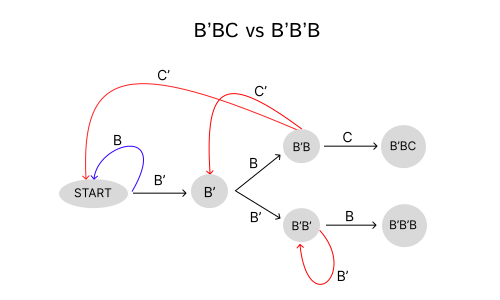

Penney's Game
Another example of non-transitive games is Penney's game.
For the reader who does not know how Penney's game is played.
This is a well-known gambling game where the odds are stacked against the bettor.
How is Penney's game played?
Two Players, choose a combination of 3 heads or tails
For example, player 1 chooses the combination HTH. (Heads, Tails, Heads)
On the opposition, player 2 chooses the combination TTH (Tails, Tails, Heads)
A fair coin is tossed, the players record the results as a sequence.
After a couple of tosses, the results may look like this: HHTHHT. Nobody's combination has matched so far.
The sequence must be of length 3 or more for matches to occur
The next toss is Heads, making the sequence HHTHHTH. The last 3 tosses match player A's combination so they win a point.
- The sequence gets reset to nothing and the coin gets tossed again.
The players decide best of how many points to play up to.
Are all combinations of equally advantageous, similar rock-paper-scissors?
If one has studied Penney's game, they will find that this is not the case. There is a trick to always have a higher probability of winning in Penney's game. The trick is to force your opponent to announce their chosen combination first and then to chose our combination based on theirs.
It is important to note that the game is not decided when the strategies are presented, unlike rock paper scissors. It's obvious that in rock paper scissors, it would be ridiculous to allow your opponent to choose the item after you have shown your combination first since it's easy to see how they can win 100% of time without advanced math. Since Penney's game is decided by coin tosses following the announcement of the combination, it's easy to be deceived that it's a fair 50:50 game.
What is the method to always win at Penney's game?
Assuming you opponent has announced their combination, you can following the following algorithm to generate a combination that has a higher probability than your opponent's
- Suppose your opponent chooses the combination HTH
- You generated combination should be (opposite of their 2nd)(1st)(2nd) letter
- The 3rd letter of their combination does not matter in the generation of your advantageous combination.
- You're combination following the example should be HHT
Below are two more examples on how to use this method
Let's test this method by pairing all combinations against each other.
We are going to test the combinations against each other using the following Python Code. The reader can input the 3 letter combinations in lines 6 and 7 (in capitals) and press run to see percentage of wins after tossing a coin 1 million times. The code Picks a random letter in line 15 using a uniform distribution and makes a sequence. When the sequence is longer than 2 letters, the if statement in line 17 checks the last 3 characters whether they match any of the 2 combinations. This check is carried out on every toss.
We changed the variables in lines 6 and 7 to generate 26 matches between the pairs and recorded their results in a table below.
How to read this table?
- The cells coloured in green mean the row combination won by obtaining the cell percentage.
- The cells coloured in red mean the row combination lost by obtaining the cell percentage.
- Cells coloured in yellow which all have 50% are draws between combinations
- Example: HTH has a 60% chance over HHH
Did the method we outlined above worked?
If we pair all the combinations along with their transformed advantegous counter parts we get the following results.
Note: Destination beats origin
- HHH (12%) → THH (88%)
- HHT (25%) → THH (75%)
- HTH (33%) → HHT (67%)
- HTT (33%) → HHT (67%)
- THH (33%) → TTH (67%)
- THT (33%) → TTH (67%)
- TTH (25%) → HTT (75%)
- TTT (12%) → HTT (88%)
From our repetitive testing, we can see that the method clearly works with a minimum success rate of 67%.
We can create a diagram which shows the relation between all of the combinations using this method.
The diagram above shows how some combinations my superior than others however there is not a supreme combinations that is above all. These are the required properties for the game to be non-transitive.
Why does the method work? And how can we work out the probabilities between each pair?
Example of MathJax: When \(a \ne 0\), there are two solutions to \(ax^2 + bx + c = 0\) and they are $$x = {-b \pm \sqrt{b^2-4ac} \over 2a}.$$
To show how the method works, we are going to cover a couple of cases when this method is used with an arbitrary combination of heads or tails of length 3.
Using the method we are going to generate the combination of Player 2
\(Let \ Player1 = ABC,\) where A, B and C are eaither heads or tails.
\(Let \ Player2 = B'AB,\) where B' is not B
Case (1a): \(If \ A = B'\)
If A = B', we can rewrite the player combinations as follows (rewriting all As as B's).
\(Player1 = B'BC\)
\(Player2 = B'B'B\)
We are going to draw a tree diagram to see which combination is most likely to appear.
